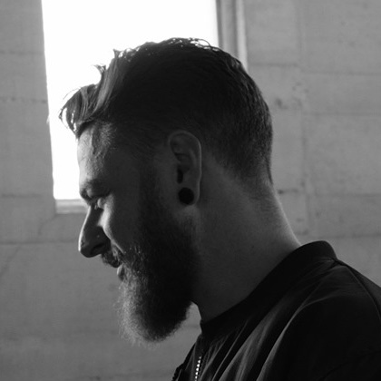

Gabriel Greenberg*
Associate Professor
Department of Philosophy, UCLA
I study iconic representation and computational approaches to the mind.
Recent Papers
- The Iconic-Symbolic Spectrum
Philosophical Review 132(4), 2023 - The Structure of Visual Content
forthcoming, Mind - Map Semantics and the Geography of Meaning
Oxford Handbook of Applied Philosophy of Language, 2024 - Spatial Coherence in Narrative Film
Discourse and Coherence (ed. Preyer)
Making Minds
Textbook · Course WebsiteAn illustrated textbook introduction to the formal theory of computation and the computational theory of mind.